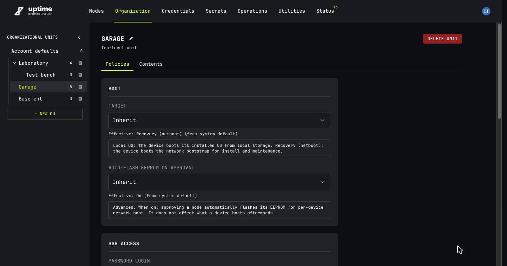

Organizational units and policies
Group nodes into units and set policies once for all of them.
Group nodes into units on the Organization page and set policies there once for all of them.
Units group nodes, such as the devices in one room or one site. Anything you set on a unit reaches every node in it, including nodes you move in later. A node's own setting wins, then its unit's (and a parent unit's, if the unit is nested), then the account default.
SSH users, secrets and utilities attached at several levels add up on the node. Where two levels define the same one, the nearer level wins.
Create a unit
- Open Organization in the top bar.
- Click + New OU under the tree.
- Type a Name.
- Choose a Parent, or leave None for a top-level unit. Units nest two levels deep.
- Click Create.

Rename a unit with the pencil next to its name. Drag it in the rail onto another unit to change its parent.
Delete unit refuses while the unit still holds nodes, child units, playbooks or utility assignments. Move those out first.
Move nodes into a unit
- Open Nodes.
- Click Select / assign to unit above the table.
- Tick the nodes.
- Open Assign to unit and pick the unit.
You can also drag selected rows onto a unit in the left rail, or use Move on the Unit row of a node's Overview. A moved node picks up the new unit's settings at once. To place new devices in a unit when they join, give their adoption token an Adoption OU (Secrets and variables).
Set a policy on a unit or for the whole account
- Open Organization.
- Select a unit in the rail, or Account defaults for every node that has no answer of its own.
- On the Policies tab, change the fields you need.
- Click Save policies.

A field left on Inherit shows the value that applies and where it comes from, for example Effective: Recovery (netboot) (from system default).
What you can set:
- Target, the system a node boots (Install an OS)
- Auto-flash EEPROM on approval
- Password login (Access)
- Default image, the OS image an install uses when it names none
- Platform, the board, its variant, LEDs and modules (Hardware and watchdog)
- Supervision, the watchdog (Hardware and watchdog)
Password login goes to the devices as soon as you save. Saving hardware or watchdog settings only stores them, and nothing changes on a device until you apply them.
The unit's Contents tab lists its nodes and everything that reaches them. N override(s) next to a node means it sets some fields itself, and Reset to inherited clears them.